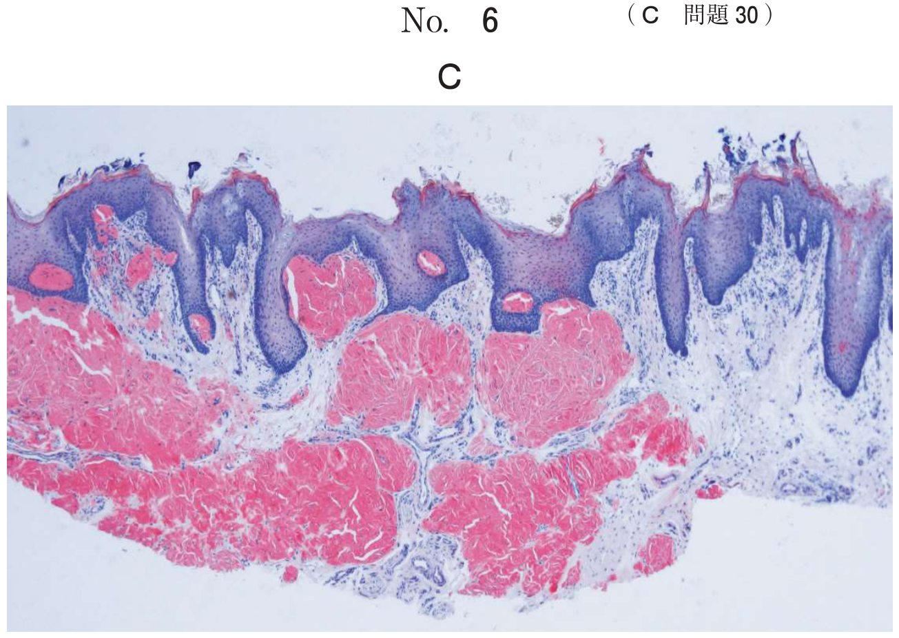
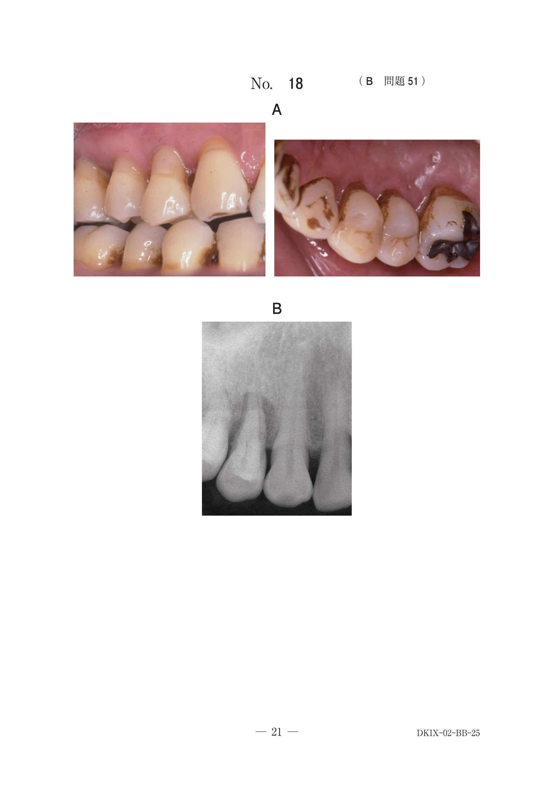
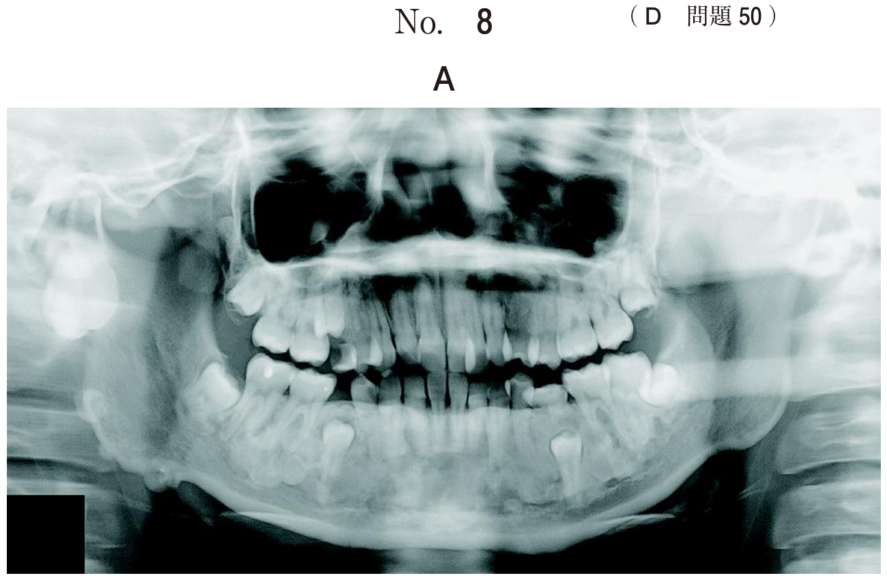
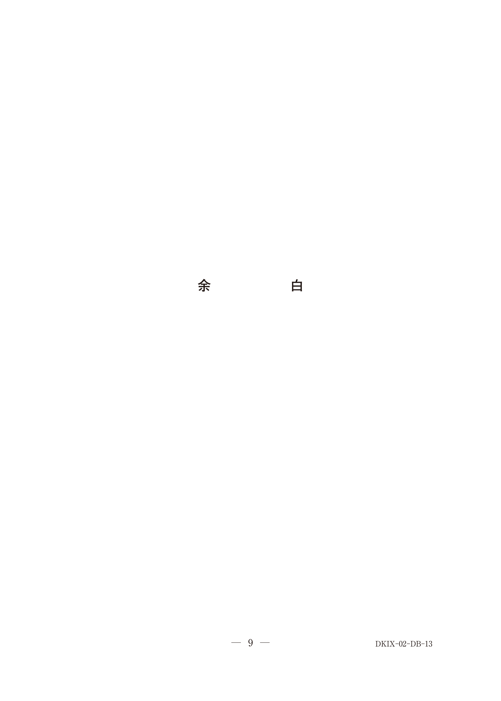
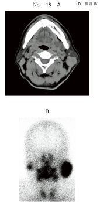
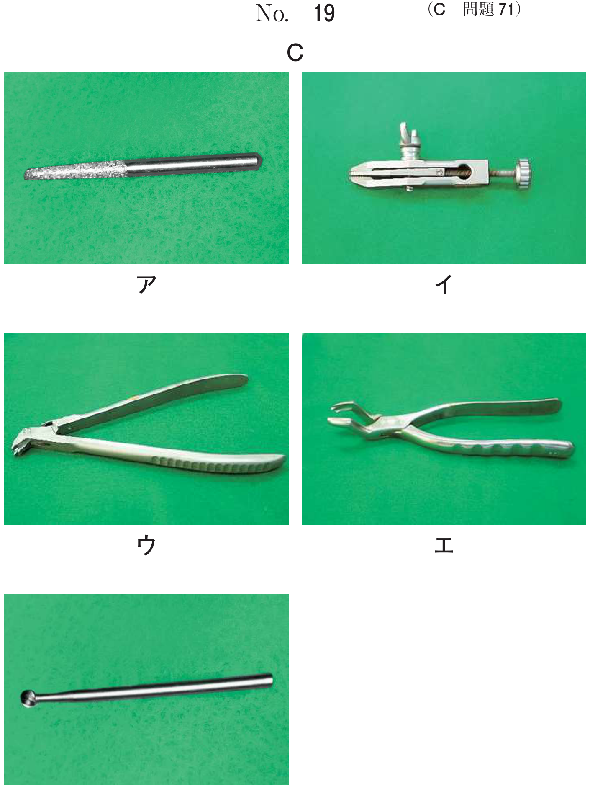

唾液腺腫瘍は耳下腺、顎下腺、舌下腺の大唾液腺と、口蓋・口唇・頬粘膜などに存在する小唾液腺から発生する。全唾液腺腫瘍の約5%が全腫瘍に占める割合であり、頭頸部の約1%である。
| 部位 | 良性の割合 | 特徴 |
|---|---|---|
| 耳下腺 | 約80% | 唾液腺腫瘍の発生頻度が最も高い |
| 顎下腺 | 約50% | 悪性の割合が耳下腺より高い |
| 舌下腺 | 低い | 悪性の割合が高い |
| 小唾液腺 | 約50% | 口蓋に最も多い |
唾液腺腫瘍で最も頻度が高い（全唾液腺腫瘍の約60%）。上皮成分と間葉成分（粘液腫様、軟骨様など）が混在し、きわめて多彩な組織像を呈することから「混合腫瘍」ともよばれていたが、上皮起源であることが認められ、現在は多形腺腫の名称が広く用いられている。
| 部位 | 頻度 |
|---|---|
| 耳下腺 | 84% |
| 顎下腺 | 8% |
| 小唾液腺 | 6.5% |
小唾液腺原発の部位別頻度は、口蓋が最多（65%）、次いで口唇18%、頬5%、舌2%である。口腔内では口蓋の硬口蓋移行部に好発する。
多形（性）腺腫で正しいのはどれか。2つ選べ。
【解説】多形腺腫は唾液腺腫瘍で最も頻度が高く（約60%）、口腔内では口蓋に最多である。女性にやや多く（a×）、単発性であり（b×）、20〜50歳に好発する（c×）。
39歳の女性。口蓋の腫瘤を主訴として来院した。かかりつけ歯科医で指摘されたという。触診では弾性軟で、圧痛はない。初診時の口腔内写真（別冊No.13A）、造影CT（別冊No.13B）及び生検時のH-E染色病理組織像（別冊No.13C）を別に示す。 診断名はどれか。1つ選べ。

【解説】39歳女性、口蓋の弾性軟・無痛性腫瘤。口蓋は小唾液腺腫瘍の好発部位であり、年齢・性別・臨床所見から多形腺腫を考える。病理像で上皮成分と間葉成分の混在が確認できれば診断確定。粘表皮癌・腺様嚢胞癌は悪性で浸潤性増殖を示す。壊死性唾液腺化生は口蓋に生じるが潰瘍を伴う。
44歳の女性。口蓋の腫脹部の精査を希望して来院した。かかりつけ歯科医で指摘されたという。口蓋に弾性軟から中等度、無痛性の腫瘤を認める。初診時の口腔内写真（別冊No.25A）、CT（別冊No.25B）、MRI（別冊No.25C）及びH-E染色病理組織像（別冊No.25D）を別に示す。 診断名はどれか。1つ選べ。 ｆ 腺様嚢胞癌 ｇ 扁平上皮癌 ｈ Warthin腫瘍

【解説】44歳女性、口蓋の弾性軟〜中等度・無痛性腫瘤。口蓋は小唾液腺の多形腺腫が最も多い部位である。Warthin腫瘍は耳下腺に好発し口蓋には生じない。腺様嚢胞癌・粘表皮癌・扁平上皮癌は悪性腫瘍であり、無痛性の境界明瞭な腫瘤像とは異なる。
71歳の男性。口蓋部の腫脹を主訴として来院した。半年前に自覚したが、痛みがないためそのままにしていたという。左側口蓋部に弾性硬の腫脹を認める。初診時の口腔内写真（別冊No.12A）、CT（別冊No.12B）、MRI（別冊No.12C）及び生検時のH-E染色病理組織像（別冊No.12D）を別に示す。 適切な対応はどれか。1つ選べ。

【解説】口蓋部の無痛性腫瘤で、病理像から多形腺腫と診断される。多形腺腫の治療は外科的切除が原則である。被膜外切除（核出術）では再発のリスクがあるため、周囲組織を含めた切除が推奨される。経過観察では悪性転化のリスクがあり、放射線療法は良性腫瘍には適応しない。
78歳の女性。口底部の腫脹を主訴として来院した。6か月前に自覚したが、疼痛がないためそのままにしていたところ、徐々に大きくなってきたという。左側舌下小丘からの唾液の排出は良好で、舌の知覚異常はみられない。初診時の口腔内写真（別冊No.13A）、MRI脂肪抑制T2強調像（別冊No.13B）及び生検時のH-E染色病理組織像（別冊No.13C）を別に示す。 適切な治療法はどれか。1つ選べ。

【解説】口底部の無痛性腫脹で、舌下小丘からの唾液排出は良好（唾石症ではない）。口底部に発生した腫瘍であり、舌下腺由来の良性腫瘍（多形腺腫）と考えられる。治療は腫瘍を含めた舌下腺摘出が適切である。顎下腺摘出では原発巣が残存する。開窓や穿刺吸引は嚢胞に対する処置であり、充実性腫瘍には適さない。
リンパ組織と乳頭状に増殖した嚢胞状の腺腔構造を呈する腺上皮からなる腫瘍である。唾液腺腫瘍の2〜15%を占める。わが国での頻度は欧米に比べてやや少ない。
良性の経過で、再発はまれである。
中高年の男性に好発するのはどれか。1つ選べ。
【解説】Warthin腫瘍は40〜70歳の男性に好発する（男女比3〜5：1）。多形腺腫は女性にやや多い。横紋筋肉腫・リンパ管腫・神経芽細胞腫は小児に好発する腫瘍である。
64歳の男性。左側顔面の無痛性腫瘤を主訴として来院した。数年前に気付いたが、痛みがないため放置していたところ、徐々に増大してきたという。初診時のCT（別冊No.18A）、99mTcO4−シンチグラム（別冊No.18B）及び生検時のH-E染色病理組織像（別冊No.18C）を別に示す。 この疾患の特徴はどれか。2つ選べ。

【解説】64歳男性の左側顔面の無痛性腫瘤で、99mTcシンチグラムで集積を認める → Warthin腫瘍。耳下腺に好発し（a○）、約7〜10%が両側性に発生する（e○）。唾疝痛は唾石症の症状（b×）。口腔乾燥はSjögren症候群（c×）。神経麻痺は悪性腫瘍を示唆する所見（d×）。
65歳の男性。頸部の腫脹を主訴として来院した。右側耳介下部に無痛性の腫脹を認める。初診時のPET/CT（別冊No.25A）、MRI脂肪抑制造影T1強調像と脂肪抑制T2強調像（別冊No.25B）、ドプラ超音波横断像（別冊No.25C）及び生検時のH-E染色病理組織像（別冊No.25D）を別に示す。 診断名はどれか。1つ選べ。

【解説】65歳男性、右側耳介下部（耳下腺部）の無痛性腫脹。年齢・性別・部位からWarthin腫瘍を考える。病理組織像でリンパ組織と二層の腺上皮が乳頭状に増殖する像が確認できれば確定診断となる。多形腺腫は女性に多く、病理像が異なる。
| 項目 | 多形腺腫 | Warthin腫瘍 |
|---|---|---|
| 頻度 | 唾液腺腫瘍の約60%（最多） | 2〜15% |
| 好発年齢 | 20〜50歳 | 40〜70歳 |
| 性差 | 女性にやや多い | 男性に多い（3〜5：1） |
| 好発部位 | 耳下腺、口腔内では口蓋 | 耳下腺（浅葉下極） |
| 両側性 | まれ | 7〜10% |
| 硬さ | 弾性硬〜弾性軟 | 弾性軟（時に波動） |
| 99mTcシンチ | 集積なし | 集積あり |
| 病理 | 上皮＋間葉成分の混在 | 二層上皮＋リンパ組織 |
| 悪性転化 | あり | まれ |
| 再発 | 5〜45% | まれ |
唾液腺良性腫瘍に対する最適の治療は、外科手術による腫瘍組織の完全な切除である。
| 部位 | 術式 |
|---|---|
| 耳下腺浅葉 | 耳下腺浅葉切除術 |
| 耳下腺深葉 | 耳下腺全摘出術 |
| 顎下腺 | 顎下腺全摘出術 |
| 口蓋（小唾液腺） | 周囲組織を含めた切除 |
| 舌下腺 | 舌下腺摘出術 |